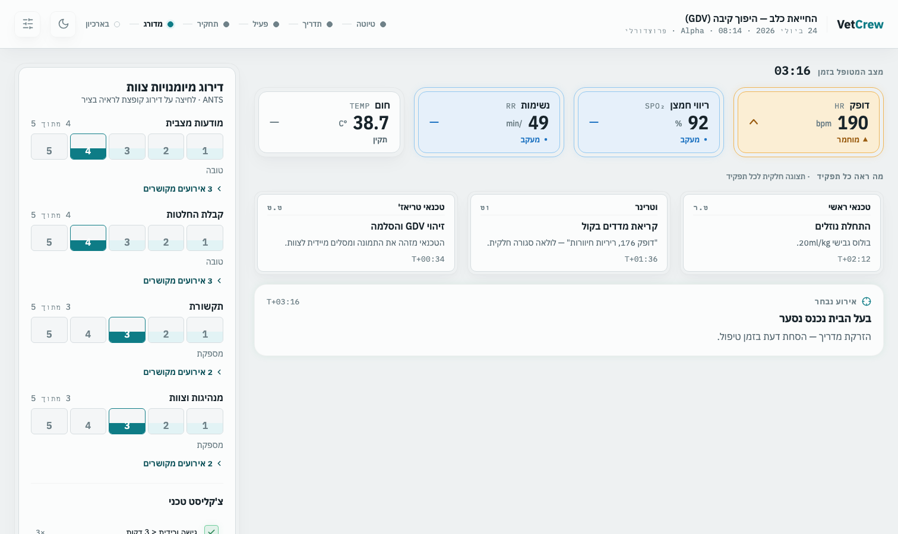

VetCrew
הכשרת צוות למחלקות חירום וטרינריות
איך נדע שטכנאי חדש מוכן להתחיל לעבוד?
הצעת קונספט · דרג בסיס · 2026
חיצים לניווט בין השקפים
מה קורה היום
איך יודעים שטכנאי חדש יכול להתחיל לעבוד?
התשובה — בעיקר תחושת בטן מצד הטכנאי החופף.
והמבחן שלך — שבכתב, מטבעו, לא משקף את העבודה בפועל: הוא מכסה רק חלק מהידע, ולא את הביצוע.
וגם, הכי חשוב: לחץ מצד ההנהלה להעסיק טכנאים חדשים — בגלל מחסור.
הערכה חלשה + גיוס בלחץ = טכנאי מבולבל שלא בטוח בעצמו — שבקצה דורש יותר עבודה מכולם, ומסכן את בעלי החיים. זו לא אשמה של אף אחד — אלה הכלים.
למה זה חשוב
זו לא בעיה מקומית — זה כל התחום
79%
מהמרפאות (חירום/ספציאליטי) דיווחו על עזיבת טכנאים/אחיות בשנה אחת
Instinct Science, State of ER & Specialty Care 2024 (n=545)
85%
מדווחים על מחסור בכוח אדם — האתגר המרכזי בתחום, בעלייה משנה שעברה
Instinct Science, 3rd annual survey, 2026
אין
אונבורדינג סטנדרטי ואין הערכת מוכנות אחידה — כל בית חולים ממציא לבד
כל גיוס בלי הערכה אמיתית = סיכון שנכנס למחלקה
מה קיים — ומה חסר
יש מי שמסמן וי על מטלות. אין מי שמודד החלטות.
מה שקיים היום
- צ׳קליסטים טכניים — סימון ״בוצע/לא בוצע״
- סימולטורים מרפואת אדם, בעיקר החייאה
- מערכות LMS שסופרות קורסים שהושלמו
מה שאף אחד לא עושה
- מדידת ההחלטות שבתוך העבודה: איזה נתיב, איזה טובוס, מתי לעצור ולהסלים
- העבודה היומיומית עצמה — לא רק תרחיש החייאה
- רשומת ביצוע שאפשר לפתוח, לבקר ולהגן עליה
בונים את כל השכבות של ההר — אירועי סימולציה מובנים, שנכתבים בהדרכתך ובעזרתך, סביב שיטת העבודה שהצוות כבר עובד איתה במשמרת, במציאות.
זה מה שהטכנאי רואה מולו: מוניטור של מטופל מאושפז, ולצידו רשימת המשימות של אותו מטופל — בדיוק המשמרת, בסימולציה.
מוניטור חי, נאמן למקור
אותם צבעים, אותם גלים ואותם ערכים כמו במחלקה. מצב המטופל משתנה בזמן אמת — צריך לקרוא אותו בעצמך.
משימות של משמרת אמיתית
קבלת משימות לפי צבע — בצע, בצע ודווח, מתוזמן — אותה שיטה שהצוות כבר עובד איתה היום.
בלי רמזים
תרופה שדורשת אישור רופא נראית כמו כל משימה אחרת. לדעת לעצור ולקרוא לרופא — זה בדיוק מה שנמדד.
שכבת ההחלטות
לא רק ״עשית״ — אלא ״עשית נכון״
- כמות במ״ל ודרך המתן נמדדות בנפרד. כמות נכונה בדרך מתן פסולה — תרופה ל־SC בלבד שנדחפת IV — היא כשל מלא, לא ״כמעט נכון״.
- המערכת לא מחשבת ולא חוסמת. הטעות היא המדידה: הבחירה נרשמת, מקבלת חותמת זמן, ונשפטת.
- והשאלה הקשה באמת: האם שמת לב לחריגה ועצרת — או המשכת לדחוף?
בצע ודווח
Diphenhydramine · 20 mg
הנפח חושב נכון (100 mg/ml) — אבל הנתיב פסול: SC בלבד
0.2ml
מתן
PO
SC
IM
IV
מתן שגוי — נרשם
מצב אמיתי מהמערכת: הבחירה לא נחסמה — היא נרשמה, ונכשלה.

מה שרואים כאן: הרשומה שנשארת אחרי כל מבחן — ציר הזמן של האירועים, הציונים, והקשר בין כל ציון לרגע שיצר אותו.
מבחן בתנאי אמת
הטכנאי נבחן תחת לחץ שמדמה משמרת אמיתית — לא שאלון בכיתה. רואים איך הוא מתפקד, לא רק מה הוא זוכר.
ביקורת אמיתית
כל פעולה נרשמת עם חותמת זמן. כל ציון מקושר לאירוע שממנו נולד — אפשר לפתוח, לבדוק ולערער.
אפס סיכון
היום טעויות של טכנאי חדש קורות על מטופלים חיים. כאן הן קורות בסימולציה — המקום היחיד שבו מותר להיכשל.
אמינות קלינית
בלי אישור קליני — אף אחד לא מקבל ציון
1
כל פרט קליני בתרחיש
מינון, דרך מתן, סדר פעולות — כל מה שמשפיע על ציון של מישהו
2
נבדק מול תקן מוכר
RECOVER להחייאה · רשימת הכישורים של CVTEA · העלון של התרופה עצמה
3
ורק אז נחתם
תרחיש בלי חתימה פשוט לא נותן ציונים. זה מובנה במערכת — אי אפשר לדלג על זה.
דיוק קליני אצלנו הוא לא שלב ליטוש בסוף — הוא תנאי הכניסה.
מה באמת עומד מאחורי זה
הידע הקליני הוא המוצר. בלעדיו — אין כלום.
תוכנה יודעת למדוד, לתעד ולתת ציון. מה שהיא לא יודעת לבד זה מה נכון למדוד: אילו טעויות באמת קורות במחלקה, מה מסוכן, ומה מבדיל בין טכנאי שמוכן לבין אחד שעוד לא. את הידע הזה אי אפשר להוריד מהאינטרנט — הוא קיים רק אצל מי שחיה את העבודה הזאת. שתי דוגמאות אמיתיות:
תרופה שמיועדת ל־SC בלבד — ניתנת IV
טעות אמיתית שנצפתה במחלקה. מי שלא מכיר את התרופה לעומק לא יעצור — והמערכת בודקת בדיוק את זה. תרחיש כזה לא נולד מספר לימוד. הוא נולד ממי שראתה את זה קורה.
גישה ורידית — לפני בדיקת נתיב אוויר ודופק
תחת לחץ, סדר העדיפויות מתהפך: רצים למה שמרגיש דחוף במקום למה שבאמת קריטי. לזהות את הדפוס הזה ולהפוך אותו לתרחיש מדיד — זה ידע קליני, לא תכנות.
כדי שהמערכת תהיה נכונה קלינית, חייב לעמוד מאחוריה מישהו עם הידע והניסיון לאמת כל פרט. בבית החולים הזה יש אדם אחד עם ההכשרה הזאת — זו את. לא חותמת גומי — הסמכות המקצועית שהמוצר כולו נבנה סביבה.
אז מה בעצם מבקשים ממך
תפקיד ברור, עם גבולות ברורים — ועל שמך
א
מגיע אלייך פריט אחד
בקצב שלך, בלי לחץ. מתחילים מתרחיש בסיס אחד בלבד.
ב
את בודקת אותו מול תקן
לא ״לפי דעתך״ — מול RECOVER · CVTEA · העלון של התרופה. האחריות תחומה וברורה.
ג
האישור נרשם על שמך
יחד עם גרסת התרחיש — כך שלכל ציון יש גיבוי קליני מתועד, בשמך.
את לא ממציאה תוכן ולא לוקחת אחריות בלי גבול — את מאמתת מול תקן, בהיקף קטן ומוגדר, וזה נרשם לזכותך.
ומכאן
מתחילים ברגל אחת של ההר. יחד.
הצעד הראשון קטן ומדיד: תרחיש בסיס אחד — שנכתב בהדרכתך, נבדק מול תקן, ומאושר בחתימתך.
בלי התחייבות מעבר לזה. אם זה עובד — מטפסים לשכבה הבאה. אם לא — נשארת רשומה מסודרת של מה שנוסה.
השקף הזה חי: תנוחה, מיקום, מידת שרוול. המערכת לא חוסמת טעות ולא מרמזת — היא מתעדת, ומחכה לשיקול הדעת שלך.
VetCrew
תודה שהקדשת מהזמן שלך.
אם משהו כאן דיבר אלייך — אשמח לשמוע את דעתך.
הצעת קונספט · דרג בסיס · 2026